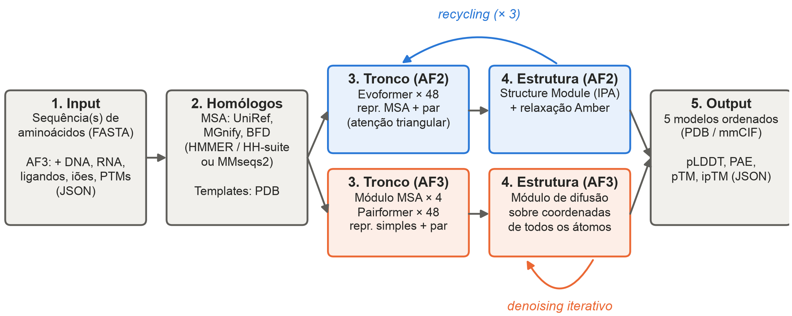
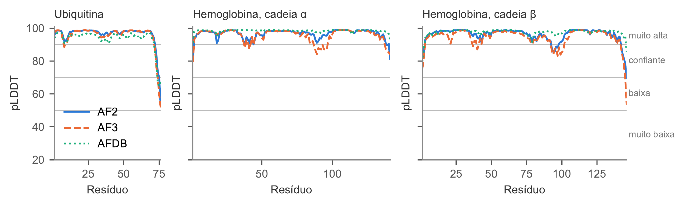

Previsão de estruturas biomoleculares por aprendizagem profunda
Afonso Marcos · Pedro Afonso · Artur Anselmo
15 de dezembro de 2026
ENQUADRAMENTO
Um problema com 50 anos
1973
Anfinsen: a sequência de aminoácidos determina a estrutura 3D
2020
CASP14: o AlphaFold 2 atinge exatidão comparável à experimental
2021
AlphaFold DB: estruturas previstas para proteomas inteiros
2024
AlphaFold 3 e Prémio Nobel da Química (Hassabis e Jumper)
214 M
estruturas previstas disponíveis na AlphaFold Protein Structure Database (EMBL-EBI)
AlphaFold · UC Ómicas
CONTEXTO ÓMICO
Proteómica estrutural: da sequência à estrutura
A montante
Genómica e transcriptómica (Illumina, PacBio, Oxford Nanopore)
Proteómica por espetrometria de massa (LC-MS/MS)
AlphaFold
Input: sequência em FASTA
AF3: JSON com DNA, RNA, ligandos, iões e PTMs
Output: estrutura 3D + confiança
A jusante
Treino e validação com estruturas do PDB: raios-X, crio-EM e RMN
Não processa dados brutos de sequenciação nem espetros: recebe sequências já traduzidas. Abrange a proteómica e genómica estrutural (98,5% do proteoma humano previsto em 2021) e a interactómica (Multimer, AF3).
AlphaFold · UC Ómicas
PERGUNTA BIOLÓGICA
Qual é a estrutura 3D de uma proteína, conhecida apenas a sua sequência?
AlphaFold 3: … e como interage com DNA, RNA, ligandos e iões?
APLICAÇÕES
Anotação funcional
Variantes genéticas (AlphaMissense)
Cristalografia e crio-EM
Desenho de fármacos
Desenho de proteínas
AlphaFold · UC Ómicas
ARQUITETURA E IMPLEMENTAÇÃO
Quatro formas de usar o AlphaFold
Via
Versão
Precisa de
Principal limitação
AlphaFold Server
AF3
Browser e conta Google
Quota diária; uso não comercial
ColabFold
AF2
Browser (GPU grátis do Colab)
Memória da GPU limita o tamanho
AlphaFold DB
AF2, já calculado
Nada (web ou API REST)
Só cadeias isoladas naturais
Instalação local
AF2 e AF3
Linux, GPU NVIDIA, Docker
0,6 a 2,6 TB de bases de dados
Python + JAX + Haiku; pesquisa de homólogos com HMMER e HH-suite (ou MMseqs2 no ColabFold). Sem interface gráfica local: linha de comandos, notebook ou web. No Bioconda só existe o ColabFold. Usámos as três primeiras vias.
AlphaFold · UC Ómicas
ALGORITMO
Coevolução + aprendizagem profunda
Resíduos em contacto mutam de forma correlacionada: esse sinal no alinhamento múltiplo (MSA) é traduzido em geometria por uma rede neuronal.
AlphaFold 2 (2021)
Evoformer × 48: representações do MSA e de pares, com atenção triangular
Structure Module: resíduos como corpos rígidos (IPA)
Recycling × 3 e relaxação Amber
AlphaFold 3 (2024)
Pairformer × 48, com o MSA reduzido a 4 blocos
Módulo de difusão: remove “ruído” até às posições de todos os átomos
Proteínas, DNA, RNA, ligandos, iões e PTMs
AlphaFold · UC Ómicas
FLUXO DE TRABALHO
Da sequência aos modelos

AlphaFold · UC Ómicas
O QUE DEVOLVE
Cinco modelos + a confiança em cada um
pLDDT
0–100, POR RESÍDUO
> 90 muito alta · 70–90 confiante · 50–70 baixa · < 50 provável desordem. Fica na coluna B-factor do modelo.
PAE
Å, MATRIZ N × N
Erro esperado na posição relativa de dois resíduos: confiança entre domínios e entre cadeias.
pTM e ipTM
0–1
Topologia global e interfaces. ipTM > 0,8: complexo de confiança; < 0,6: provável falha.
Os modelos vêm em PDB ou mmCIF e as métricas em JSON. As métricas são calibradas em cada versão e não se comparam entre AF2 e AF3: a validação objetiva faz-se contra estruturas experimentais (RMSD, TM-score).
AlphaFold · UC Ómicas
EXEMPLO PRÁTICO: AF2, AF3 E ALPHAFOLD DB
Ubiquitina e hemoglobina humanas

0,96
TM-score face ao cristal
< 0,5 Å
RMSD do núcleo (3 fontes)
0,4–0,8 Å
desvio do Fe dos hemes (AF3)
AlphaFold · UC Ómicas
O RESULTADO MAIS INTERESSANTE
Duas versões, dois estados da hemoglobina
AF3 + 4 hemes
0,43 Å
do estado T (desoxi, 2HHB)
AF2-Multimer
1,01 Å
do estado R (oxi, 1HHO)
Escala
2,35 Å
entre T e R (experimental)
Ambos com confiança muito alta (ipTM 0,88 e 0,93). O AlphaFold devolve uma única conformação estática: a confiança não diz qual estado foi previsto, nem que a proteína alterna entre eles.
AlphaFold · UC Ómicas
REPRODUTIBILIDADE E COMUNIDADE
Código aberto, pesos com reservas
Componente
Código
Pesos / dados
AlphaFold 2
Apache 2.0
CC BY 4.0 (uso comercial)
AlphaFold 3
Apache 2.0
A pedido, não comercial
AlphaFold DB
–
CC BY 4.0
ColabFold
MIT
Usa os pesos do AF2
45 000+
citações do artigo do AF2
18 000
citações do AF3 (OpenAlex, nov. 2026)
AF3: versões regulares (v3.0.5, out. 2026). AF2: sem versões novas desde 2023. Alternativas totalmente abertas: OpenFold3, Boltz, Chai-1.
AlphaFold · UC Ómicas
LIMITAÇÕES
O que o AlphaFold não faz
Conformação estática
Uma estrutura por previsão: não representa estados alternativos (ex.: T e R).
Regiões desordenadas
pLDDT abaixo de 50; o AF3 pode “alucinar” estrutura ordenada.
Mutações pontuais
Não prevê bem o efeito estrutural de mutações missense.
Dependência do MSA
A exatidão cai com menos de cerca de 30 sequências homólogas.
Ligandos e complexos
AF2 sem ligandos; Server com lista fechada; AFDB só cadeias isoladas.
Recursos e licenças
GPU e terabytes de bases de dados; pesos do AF3 só para uso não comercial.
AlphaFold · UC Ómicas
CONCLUSÃO
O AlphaFold produz hipóteses estruturais de alta qualidade.
Interpretá-las com as métricas de confiança e confirmá-las experimentalmente quando contam a dinâmica, os ligandos ou as mutações.
Afonso Marcos · Pedro Afonso · Artur Anselmo
UC ÓMICAS · 2026/2027
AlphaFold
Previsão de estruturas biomoleculares por aprendizagem profunda